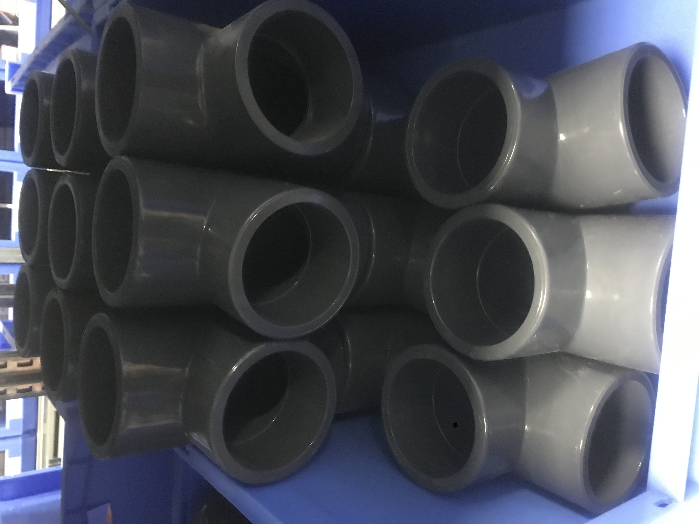
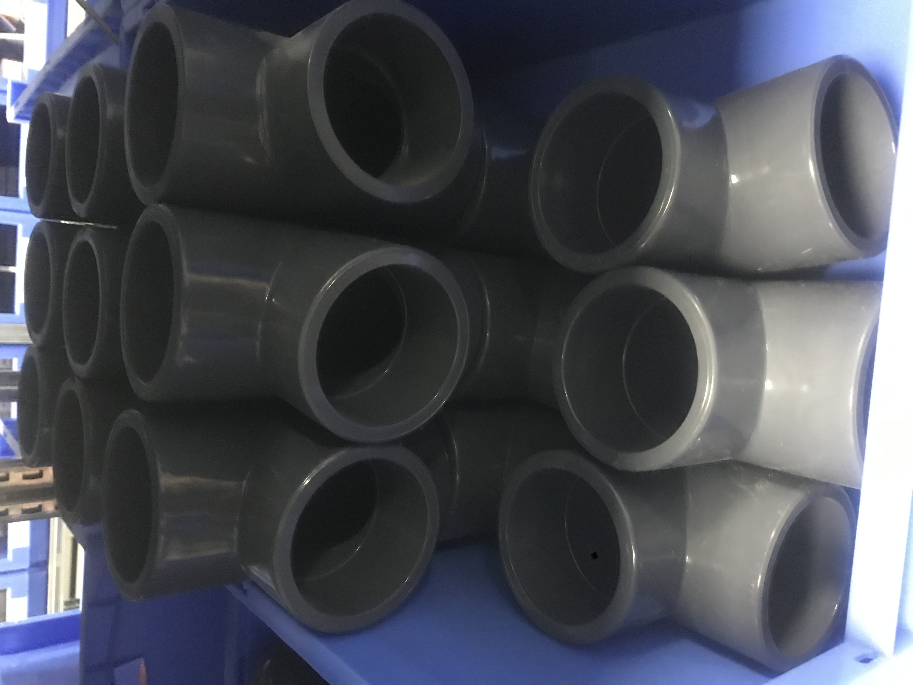
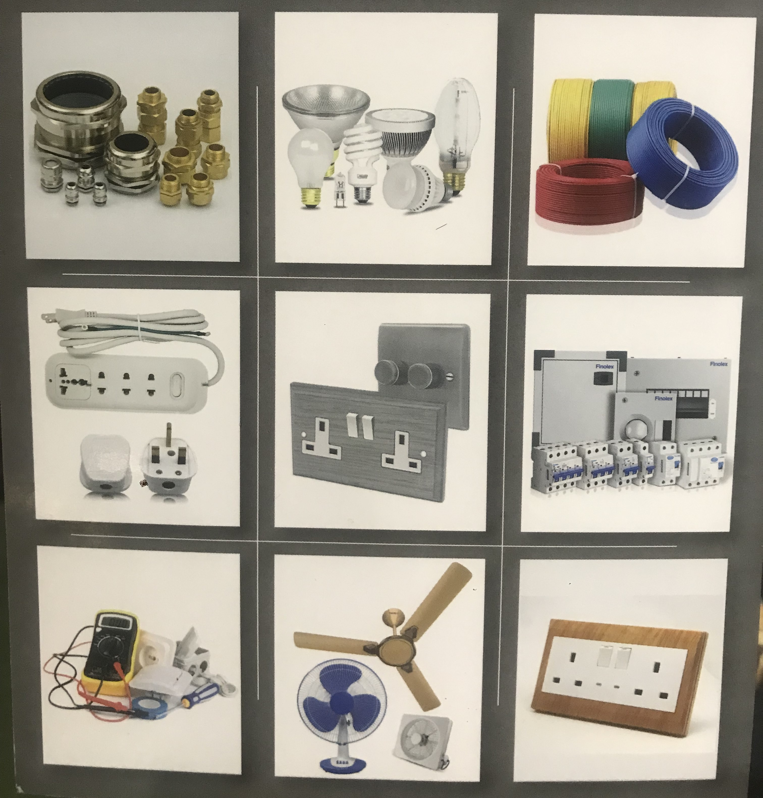
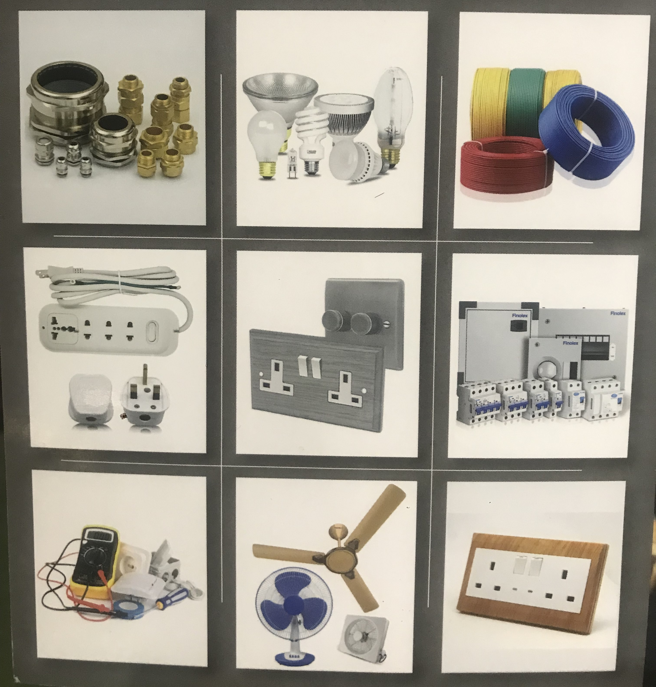
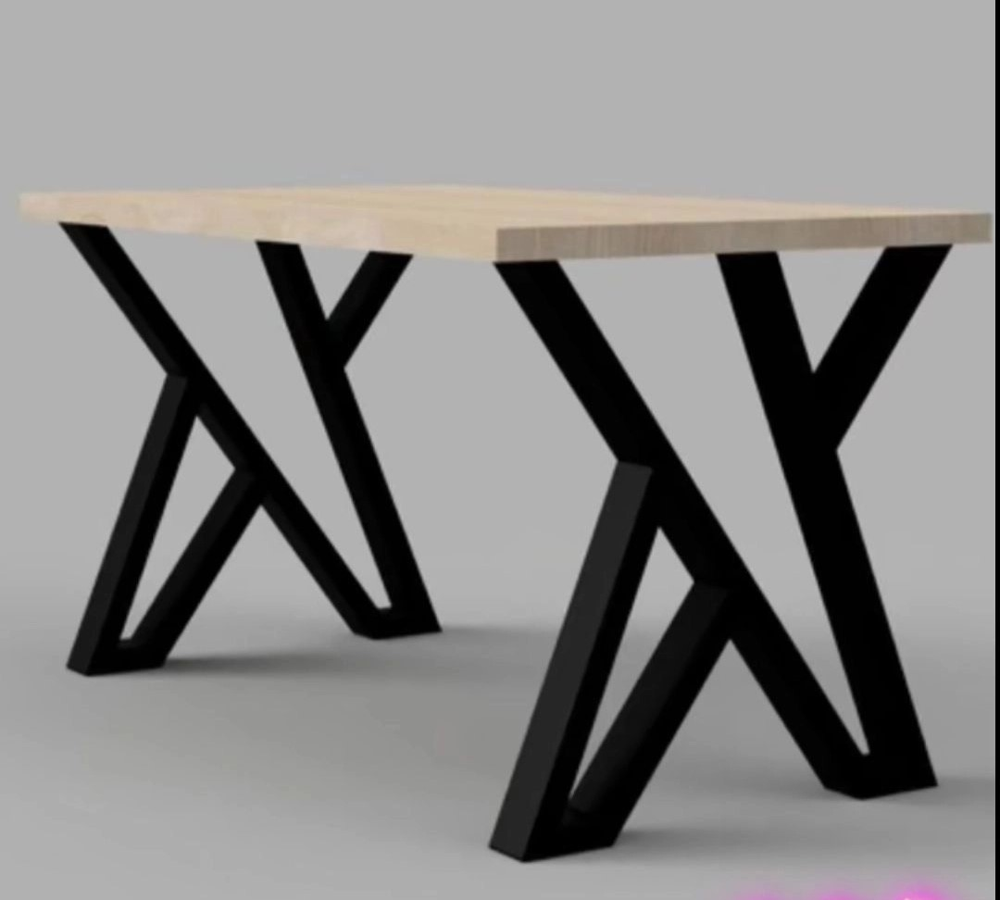
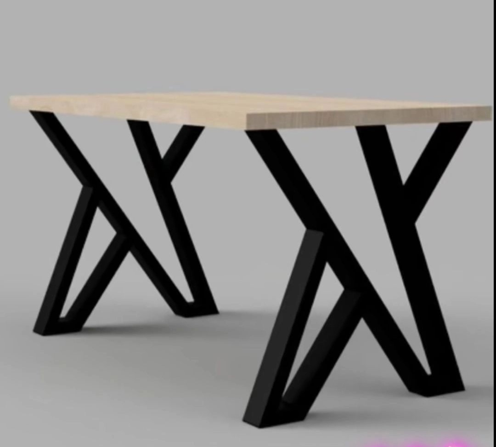

Cement
Cement is a key component in concrete and mortar. We offer various types of cement including Ordinary Portland Cement,
General-purpose cement used for most construction needs,basically for foundation, walls,pavements and structural elements
types
Hima cement
Toro cement
Steel Reinforcement
Description:
Steel bars or mesh used to reinforce concrete, providing strength and durability.
Types:
Rebar (Reinforcing Bar): Steel rods used to strengthen concrete structures.
Steel Mesh: Grid-like structure used to reinforce concrete slabs.
Uses:
Foundations, columns, beams, and slabs.
Paints and Finishes
Latex Paint:
Characteristics: Water-based, easy to clean, fast-drying, and low odor.
Types: Matte, eggshell, satin, semi-gloss, and gloss finishes.
Uses: Walls, ceilings, and trim in residential and commercial interiors.
Oil-Based Paint:
Characteristics: Solvent-based, durable, and provides a smooth finish.
Types: Gloss and semi-gloss finishes.
Uses: High-traffic areas, trim, and cabinetry.
Primer Paint:
Characteristics: Seals and prepares surfaces for better adhesion of topcoats.
Types: Oil-based, latex-based, and stain-blocking primers.
Uses: Undercoat for walls, ceilings, and new or patched surfaces.
Exterior Paints
Acrylic Paint:
Characteristics: Water-based, flexible, and resistant to fading and weather conditions.
Types: Matte, satin, and gloss finishes.
Uses: Exterior walls, sidings, and trim.
Oil-Based Paint:
Characteristics: Provides a durable and long-lasting finish, resistant to harsh weather.
Types: Gloss and semi-gloss finishes.
Uses: Woodwork, metal surfaces, and areas exposed to extreme weather.
Finish Types
Matte Finish:
Characteristics: Non-reflective, hides imperfections well.
Uses: Walls and ceilings for a smooth, even appearance.
Satin Finish:
Characteristics: Soft sheen, more durable and washable.
Uses: High-traffic areas, kitchens, and bathrooms.
Gloss Finish:
Characteristics: High shine, very durable, and reflective.
Uses: Cabinets, doors, and other high-impact areas.
Varnishes:
Characteristics: Provides a protective coating that can be glossy or satin.
Types: Polyurethane, spar varnish (for outdoor use),
Uses: Wood furniture, floors, and decorative woodwork.
Metal Finishes
Rust-Preventive Paint:
Characteristics: Formulated to prevent rust and corrosion on metal surfaces.
Types: Oil-based, water-based.
Uses: Metal railings, fences, and outdoor furniture.
Application Tools and Accessories
Brushes and Rollers:
Paint Brushes: Available in various sizes and bristle types for different painting tasks.
Roller Covers: Different nap lengths for smooth or textured surfaces.
Spray Equipment:
Paint Sprayers: Provide a smooth and even coat on large surfaces quickly.
Airless Sprayers: Ideal for high-viscosity paints and large projects.
Drop Cloths and Tapes:
Drop Cloths: Protect floors and furniture from paint splatters.
Painter's Tape: Helps achieve clean lines and protect surfaces from overspray.
Plumbing materials
Pipes and Fittings
PVC Pipes: Used for drainage, waste, and vent systems; resistant to corrosion and chemicals.
CPVC Pipes: Similar to PVC but designed for hot water applications.
Copper Pipes: Durable and resistant to corrosion; commonly used for water supply lines.
PPR Pipes (Polypropylene Random Copolymer): Used for both hot and cold water applications; known for its flexibility and resistance to high temperatures.
Pipe Fittings: Includes elbows, tees, couplings, and reducers, available in various materials like PVC, CPVC, copper, and brass.
Valves and Faucets.
Ball Valves: Provide a shut-off mechanism with a quarter-turn operation.
Gate Valves: Used to control flow with a sliding gate mechanism.
Check Valves: Prevent backflow by allowing flow in one direction only.
Mixing Valves: Used to regulate water temperature in faucets and showers.
Sink Faucets: Available in various styles and finishes; include single-handle and dual-handle models.
Showerheads: Range from basic models to multi-function, high-pressure, or low-flow options.
Fixtures and Accessories
Toilets: Includes standard, comfort height, and dual-flush models.
Sinks: Available in materials like porcelain, stainless steel, and composite; includes kitchen and bathroom sinks.
Bathtubs: Includes standard, freestanding, and corner models.
Shower Systems: Includes showerheads, hand showers, and complete shower systems with valves and controls.
Pipe Insulation: Used to insulate pipes to prevent heat loss and protect against freezing.
Tools and Maintenance Supplies
Pipe Wrenches: Used for gripping and turning pipes.
Plumbing Snakes: For clearing clogs in pipes.
Sealants and Tapes: Includes PTFE (Teflon) tape and pipe dope for sealing threaded joints.
Pipe Cutters: For cutting pipes to the desired length.

 

Electric equipments
Find all your electrical needs including pipes, fittings, switches, and wiring cables.
We stock reliable and high-quality products from leading brands.
Electrical Wires:
Includes single-conductor, multi-conductor, and shielded wires for various applications.
Cables: Includes power cables, coaxial cables, and data cables for networking and communication.
Circuit Protection
Circuit Breakers: Protect electrical circuits from overloads and short circuits; available in various amperages and types.
Fuses: Provide overcurrent protection; available in various ratings and styles.
Ground Fault Circuit Interrupters (GFCIs): Provide protection against electrical shock by detecting ground faults.
Switches and Outlets
Light Switches: Includes standard, dimmer, and smart switches.
Electrical Outlets: Includes standard, tamper-resistant, and USB-integrated outlets.
Power Strips: Provide multiple outlets and often include surge protection.
Lighting Fixtures
Ceiling Lights: Includes flush mounts, chandeliers, and pendant lights.
Wall Sconces: Wall-mounted lighting fixtures for accent and ambient lighting.
Recessed Lighting: Lights installed into the ceiling, providing a clean, unobtrusive look.
Outdoor Lighting: Includes floodlights, garden lights, and security lights.
Electrical Boxes and Panels
Electrical Boxes: Includes junction boxes, outlet boxes, and switch boxes for housing electrical connections.
Distribution Panels: Centralized panels that distribute electrical power throughout the building.
Conduit and Raceway Systems
Electrical Conduit: Includes PVC, metal, and flexible conduit for protecting and routing electrical wiring.
Raceways: Provide an organized and protected way to route electrical wiring in commercial and industrial settings.
Connectors and Terminals
Wire Nuts: For twisting and connecting multiple wires together.
Terminal Blocks: Provide a means of connecting multiple wires in a secure manner.
Connectors: Includes spade connectors, butt connectors, and ring terminals for various electrical connections.
Tools and Accessories
Multimeters: For measuring voltage, current, and resistance.
Wire Strippers: For removing insulation from electrical wires.
Pliers and Cutters: For gripping, cutting, and twisting wires.
Electrical Tape: For insulating electrical connections and bundling wires.
 


Glass materials and services
Flat Glass
Tempered Glass: Heat-treated glass that is stronger and shatters into small pieces if broken.
Laminated Glass: Glass with a layer of plastic between two panes, offering safety and sound insulation.
Insulated Glass Units (IGUs): Double or triple-glazed glass panels with a sealed airspace for improved thermal insulation.
Decorative Glass
Frosted Glass: Glass with a matte finish, used for privacy and decorative purposes.
Colored Glass: Glass tinted with various colors for aesthetic applications.
Textured Glass: Glass with patterns or textures for decorative effects and privacy.
Glass for Facades
Curtain Wall Systems: Glass panels that are part of a building's outer covering, often used in high-rise buildings.
Spandrel Glass: Opaque or reflective glass used to cover structural elements in a curtain wall system.
Glass Doors and Windows
Sliding Glass Doors: Doors with large glass panels that slide open.
Bi-Fold Glass Doors: Doors that fold back on themselves to open.
Window Units: Various types of windows including casement, double-hung, and awning windows.
We offer a range of roofing materials including tiles, shingles, and metal sheets. Durable and weather-resistant options are available for different building types.

 

{kind=link}


{kind=link}
{kind=link}